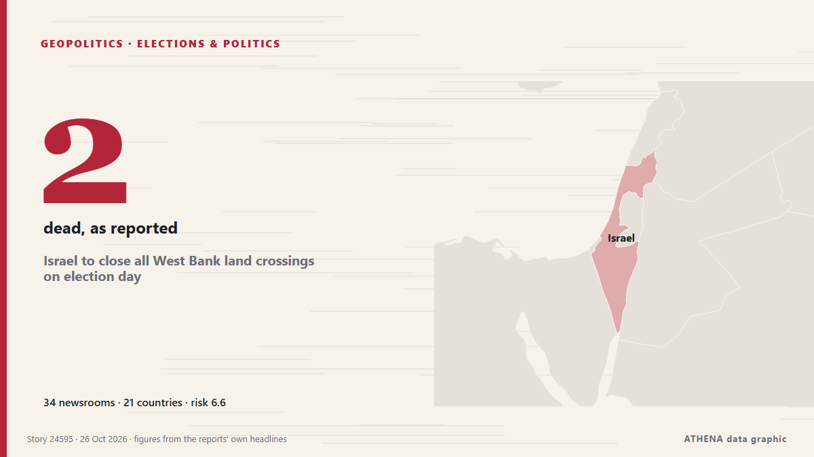

Israel to close all West Bank land crossings on election day

Israel announced it would be closing all land crossings with the West Bank on the day of next week's parliamentary elections. من France 24 English
نشرته بشكل مستقل 34 مصدرًا في 21 دولة منذ 23 أكتوبر، وأول من نشره Fox News (World)؛ والتغطية في ذروتها. يقدّر ATHENA الخطر بأنه مرتفع (6.6/10)، ويعود ذلك أساسًا إلى خطورة الضرر الموصوف ونطاقه الجغرافي والقطاعي. الثقة 89٪ (مرتفعة)، وعدد المصادر المستقلة المؤكِّدة: 34، بمتوسط موثوقية للمصادر يبلغ 78٪. وسائل الإعلام حسب البلد: الولايات المتحدة (5), إسرائيل (4), أستراليا (4). التغطية: من 23 أكتوبر إلى 25 أكتوبر، 53 ساعة.
لماذا يهم: تتابع هذه الصفحة النزاع الذي يشمل إسرائيل وغزة والضفة الغربية ولبنان — التطورات العسكرية والوضع الإنساني والدبلوماسية — كما تغطيه وسائل الإعلام حول العالم.
ما الذي تغيّر: 11 تقارير جديدة من 11 غرف أخبار خلال 24 ساعة حتى 26 أكتوبر.
تُعرض العناوين بالإنجليزية كما نُشرت.
نظرة سريعة
اختير وقُيِّم وكُتب وفق منهجية ATHENA المنشورة. لا يتدخل أي محرر في الأحداث بعينها. كيف يُنتَج ›
| 23 Oct 08:05 UTC | 2 |
|---|---|
| 23 Oct 11:05 UTC | 1 |
| 23 Oct 14:05 UTC | 2 |
| 23 Oct 17:05 UTC | 2 |
| 23 Oct 20:05 UTC | 4 |
| 23 Oct 23:05 UTC | 2 |
| 24 Oct 02:05 UTC | 1 |
| 24 Oct 05:05 UTC | 3 |
| 24 Oct 08:05 UTC | 2 |
| 24 Oct 11:05 UTC | 1 |
| 24 Oct 14:05 UTC | 3 |
| 24 Oct 17:05 UTC | 0 |
| 24 Oct 20:05 UTC | 2 |
| 24 Oct 23:05 UTC | 3 |
| 25 Oct 02:05 UTC | 2 |
| 25 Oct 05:05 UTC | 5 |
| 25 Oct 08:05 UTC | 2 |
| 25 Oct 11:05 UTC | 3 |
| 25 Oct 14:05 UTC | 2 |
| 25 Oct 17:05 UTC | 1 |
| 25 Oct 20:05 UTC | 1 |
| 25 Oct 23:05 UTC | 1 |
| 26 Oct 02:05 UTC | 0 |
| 26 Oct 05:05 UTC | 1 |
| 26 Oct 08:05 UTC | 1 |
لماذا هذه الأرقام
الأهمية
الخطر
الثقة
التغطية — من نشر الخبر ومتى
العنوان كما نُشر · يفتح الأصل- Fox News (World) · الولايات المتحدةTwo suspected gunmen dead, two IDF soldiers killed in West Bank shooting
- CBC News · كنداNetanyahu orders West Bank closure as Israeli soldiers, Palestinian gunmen killed in exchanges
- The Jerusalem Post · إسرائيلSquad commander, combat soldier killed in West Bank terror attack, IDF confirms
- PBS NewsHour · الولايات المتحدةIsraeli military says 2 soldiers were killed in the West Bank attack that also left 2 gunmen dead
- NDTV · الهند'Will Destroy Terror Infra': Netanyahu After 2 Soldiers Killed In West Bank
- Hespress English · المغربNetanyahu launches major West Bank operation after Israeli soldiers killed
- RTÉ News · أيرلنداWest Bank attack may boost Netanyahu's election chances
- Foreign Policy · الولايات المتحدةNetanyahu Orders Large-Scale Military Operation in West Bank
- SBS News · أسترالياNetanyahu vows 'house-by-house' retaliation after two soldiers killed in West Bank
- NPR World · الولايات المتحدةIsraeli PM pledges massive military operation after West Bank checkpoint attack
- Türkiye Today · تركياNetanyahu threatens largest Israeli military offensive in West Bank since 1967
- Middle East Eye · INTIsraeli forces raid Bethlehem, Salfit areas in West Bank, Wafa reports
- CGTN (World) · الصينNetanyahu says Israel is planning a major West Bank military operation
- Express Tribune · باكستانIsrael launches major West Bank operation after soldiers killed
- CNA (Channel NewsAsia) · سنغافورةIsrael launches West Bank operation after attack days before election
- Dawn · باكستانIsrael launches major West Bank operation after soldiers killed
- Egypt Independent · مصرIsrael begins demolitions in West Bank city after two soldiers killed in shooting attack
- Al Jazeera English · قطرWhy is Israel launching a new military operation in the occupied West Bank?
- France 24 English · فرنساNetanyahu orders West Bank operation
- France 24 English · فرنساIsrael to close all West Bank land crossings on election day
- Al Jazeera English · قطرFull lockdown of occupied West Bank begins
- Al-Monitor · الولايات المتحدةIsrael to close all land crossings with West Bank on election day
- Euronews English · فرنساIsrael removes around 250 Palestinian families from West Bank city of Hebron after soldier deaths
- SBS News · أستراليا1,200 Palestinians displaced in West Bank operation after Israeli soldiers killed
- Haaretz (English) · إسرائيلIDF announces general closure for West Bank Palestinians on Israel's Election Day
- Middle East Eye · INTIsrael restricts entry of Palestinian labourers to West Bank areas
- Arab News · المملكة العربية السعوديةIsrael says closing all land crossings with West Bank on election day
- ABC News Australia · أسترالياIsrael presses ahead with West Bank army operation days before election
- Haaretz (English) · إسرائيلEisenkot warns Netanyahu 'will stop at nothing to stay in power' at final rally
- SBS News · أسترالياIsrael to close key access point on election day
- BBC News · المملكة المتحدةIsrael to close West Bank crossings on election day as crackdown escalates
- Mehr News (English) · إيرانIsraeli forces raid 400 points in West Bank, 2,200 displaced
- The Jerusalem Post · إسرائيلIDF evacuates Israeli rioters after fire breaks out near Palestinian West Bank town
- Türkiye Today · تركياIsrael to seal off West Bank on election day, barring Palestinian workers
- Asharq Al-Awsat (English) · المملكة العربية السعوديةIsrael to Close All Land Crossings with West Bank on Election Day
- The Straits Times · سنغافورةIsrael to close all land crossings with West Bank on Oct 27 election day
- Asharq Al-Awsat (English) · المملكة العربية السعوديةDays before Israeli Election, Military Conducts Massive West Bank Operation
- Stuff · نيوزيلنداMilitary conducts massive West Bank operation, days before Israeli election
- CBC News · كنداIsraeli military conducts massive West Bank operation, days before Israel election
- DW English · ألمانياIsrael to close all West Bank land crossings on election day